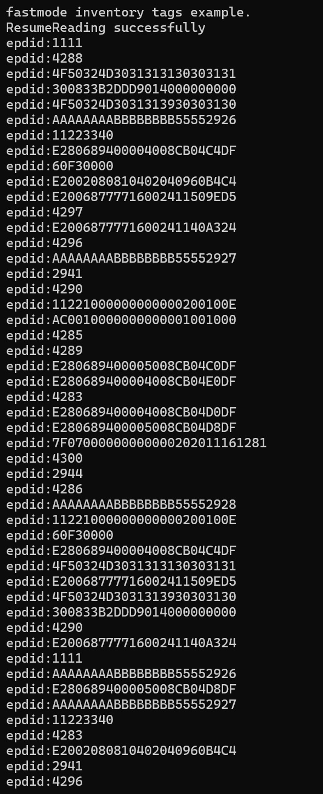

快速模式盘存并不像普通模式那样把读取到的标签缓冲在读写器内部，而是边读边上传因此它是实时性的。一旦使用接口AsyncStartReading 开始了快速模式盘存，读写器将一直处于工作状态。
快速模式盘存的标签缓冲在API内部，建议50ms以上至约1000ms的频率调用查询标签个数接口AsyncGetTagCount函数。因此程序设计上需要定时器或者线程来维持这个频率。
当接口AsyncGetTagCount 返回的标签个数大于0时，可以调用获取缓冲区接口AsyncGetNextTag取出标签，AsyncGetNextTag每次返回一个标签数据， 所以调用循环调用AsyncGetNextTag次数为AsyncGetTagCount返回个数。
除了发生异常或者已经达到预设自动停止条件会中止读写器工作状态外，要停止快速盘存工作状态需要主动调用停止快速模式盘存AsyncStopReading函数。 因此启用快速模式后，工作完毕必须调用停止函数，否则影响读写器下一步操作，以及在散热和耗能方面的效果。
快速模式现在分为普通快速模式和EX专用快速模式，EX专用快速模式必须是E系列读写器才支持，EX专用快速模式只有功率，频率参数有效，其它无效。理论上 EX专用快速模式也不能设置附加数据和过滤。默认为普通快速模式，切换普通快速模式和EX专用快速模式方法可以参考：
示例14 自定义扩展参数 参考
注意：理论上调用AsyncStartReading后，不可以使用其它操作读写器的接口。但arm7主板读写器支持快速模式盘存时同时操作GPIO（接口为SetGPO和 GetGPIEx。）
C语言代码示例5-快速模式盘存
/**
* 快速方式盘点/ fast mode inventory
*/
#include < stdio.h>
#include < stdlib.h>
#include < string.h>
#if defined (__linux__)
#include < sys/time.h>
#include < unistd.h>
#define MUL 1000
#define MSLEEP(x) usleep(x*MUL)
#else
#include < windows.h>
#define MSLEEP(x) Sleep(x)
#endif
#include "ModuleReader.h"
time_t startt,endtt;
int tagcount=0;
int testseconds=10;//测试时间/test time 10s
int main()
{
int hreader;
char* address="192.168.1.160";
int antportnum=1;
READER_ERR err;
int ants[] = {1};
int i;
unsigned char paraBuf[50+22]="Reader/Ex10fastmode";
int mode=1;
int option =0;
CustomParam_ST cpara;
int c;
int isbreak=0;
printf("fastmode inventory tags example.\n");
err=InitReader_Notype(&hreader, address, antportnum);
if (err != MT_OK_ERR)
{
printf("init reader err :%d\n", err);
return -1;
}
paraBuf[50]=mode;//1 启用E系列快速模式，0启用通用快速模式/ 1 enable ex10fastmode，0 genral fast mode
paraBuf[51]=20;
for(i=52;i< paraBuf[51];i++)
paraBuf[i]=0;
cpara.pCusParam =paraBuf;
cpara.CParamlen=22;
err = ParamSet(hreader,MTR_PARAM_CUSTOM, &cpara);
err =AsyncStartReading(hreader,ants,1,option);
if (err == MT_OK_ERR)
{
printf("AsyncStartReading successfully\n");
startt=time((time_t*)NULL);
endtt=startt;}
else
{
printf("AsyncStartReading failed err:%d\n", err);
return -1;
}
while (1)
{
endtt=time((time_t*)NULL);
if((endtt-startt)>=testseconds||isbreak)
{
AsyncStopReading(hreader);
break;
}
else
{
err =AsyncGetTagCount(hreader, &tagcount);
if (err == MT_OK_ERR)
{
for(i=0;i< tagcount;i++)
{
TAGINFO pTInfo;
err =AsyncGetNextTag(hreader,&pTInfo);
if (err == MT_OK_ERR)
{
char out[124];
Hex2Str(pTInfo.EpcId, pTInfo.Epclen, out);
printf("epdid:%s\n", out);
}
else
{ isbreak=1;break;}
}
}
else
isbreak=1;
}
MSLEEP(1000);
}
CloseReader(hreader);
printf("close the reader.input any key to exit!\n");
scanf("%c",&c);
return 0;
}
C语言代码示例5-快速模式盘存 输出结果

快速模式盘存接口中option参数具有控制作用。1 可以控制返回标签属性，例如，如果需要返回附加数据除了设置附加项外还需要配置option中的控制标签返回附加数据属性项，
2 控制快速模式过程中的占空比，占空比是指模块休闲和工作的比值。3 控制是否启用心跳。
C语言代码示例6-快速模式盘存附加项，心跳等
/**
* 快速方式盘点 附加项，心跳/ fast mode inventory with additional data，heartbeat data
*/
#include < stdio.h>
#include < stdlib.h>
#include < string.h>
#if defined (__linux__)
#include < sys/time.h>
#include < unistd.h>
#define MUL 1000
#define MSLEEP(x) usleep(x*MUL)
#else
#include < windows.h>
#define MSLEEP(x) Sleep(x)
#endif
#include "ModuleReader.h"
time_t startt,endtt;
int tagcount=0;
int testseconds=20;//测试时间/test time 20s
void PrintErrorDetail(int hreader)
{
int internalcode;
char *errdes;
char rdrip[50];
READER_ERR eh_err;
eh_err =GetReaderAddress(hreader, rdrip);
eh_err =GetLastDetailError(hreader, &internalcode, &errdes);
printf("reader %s error:%d, info:%s\n", rdrip, internalcode, errdes);
}
int main()
{
int hreader;
char* address="192.168.1.160";
int antportnum=1;
READER_ERR err;
int ants[] = {1};
int i;
int metaflag = 0;
int option =0;
CustomParam_ST cpara;
AntPowerConf antpwrconf;
int c;
int isbreak=0;
int option_sleep=0;//0 sleep 0%,1 sleep 5%,2 sleep 10%,...10 sleep 50%，11：55%，12：60%，13：70%，14：80%，15：90%。
EmbededData_ST tiddata;
unsigned char paraBuf[50+22]="Reader/Ex10fastmode";
HardwareDetails phd;
printf("fastmode inventory tags with others example .\n");
err=InitReader_Notype(&hreader, address, antportnum);
if (err != MT_OK_ERR)
{
printf("init reader err :%d\n", err);
return -1;
}
paraBuf[50]=0;// 1 enable ex10fastmode，0 genral fast mode
paraBuf[51]=20;
for(i=52;i< paraBuf[51];i++)
paraBuf[i]=0;
cpara.pCusParam =paraBuf;
cpara.CParamlen=22;
err = ParamSet(hreader,MTR_PARAM_CUSTOM, &cpara);
metaflag |= 0X0001;//返回次数/return readcount
metaflag |= 0X0002;//返回rssi 值/return rssi value
metaflag |= 0X0004;//返回天线号/return anttennID
metaflag |= 0X0008;//返回频点/return frequency
metaflag |= 0X0010;//返回时间戳/return timestamp
metaflag |= 0X0020;//返回相位值/return phase
metaflag |= 0X0040;//返回标签协议/return tag protocol
tiddata.bank = 2;
tiddata.startaddr = 0;
tiddata.bytecnt = 4;
tiddata.accesspwd = NULL;
if (ParamSet(hreader, MTR_PARAM_TAG_EMBEDEDDATA, &tiddata) != MT_OK_ERR) {
printf("ParamSet MTR_PARAM_TAG_EMBEDEDDATA failed\n");
return -1;
}
metaflag |= 0X0080;//返回附加数据/return embedded data
option = (metaflag << 8)|option_sleep;
//启用心跳,若15秒之内没有收到心跳将停止盘点返回错误/Enable heartbeat,it would stop inventory and retur error if no heartbeat package in 15s
option=option|0x80;
err =AsyncStartReading(hreader,ants,1,option);
if (err == MT_OK_ERR)
{ printf("AsyncStartReading successfully\n");
startt=time((time_t*)NULL);
endtt=startt;}
else
{
printf("AsyncStartReading failed err:%d\n", err);
PrintErrorDetail(hreader);
return -1;
}
while (1)
{
endtt=time((time_t*)NULL);
if((endtt-startt)>=testseconds||isbreak)
{
err=AsyncStopReading(hreader);
break;
}
else
{
err =AsyncGetTagCount(hreader, &tagcount);
if (err == MT_OK_ERR)
{
for(i=0;i< tagcount;i++)
{
TAGINFO pTInfo;
err =AsyncGetNextTag(hreader,&pTInfo);
if (err == MT_OK_ERR)
{
char out[124];
Hex2Str(pTInfo.EpcId, pTInfo.Epclen, out);
printf("epdid:%s readcount:%d rssi:%d antID:%d frequency:%d\ntimestamp:%d protocol:%d", out,pTInfo.ReadCnt,
pTInfo.RSSI-256,pTInfo.AntennaID,pTInfo.Frequency,pTInfo.TimeStamp,pTInfo.protocol);
GetHardwareDetails(hreader,&phd);
if(phd.module==MODOULE_SIM7100||
phd.module==MODOULE_SIM7200||
phd.module==MODOULE_SIM7300||
phd.module==MODOULE_SIM7400||
phd.module==MODOULE_SIM7500||
phd.module==MODOULE_SIM7600||
phd.module==MODOULE_SIM3100||
phd.module==MODOULE_SIM3200||
phd.module==MODOULE_SIM3300||
phd.module==MODOULE_SIM3400||
phd.module==MODOULE_SIM3500||
phd.module==MODOULE_SIM3600||
phd.module==MODOULE_SIM5100||
phd.module==MODOULE_SIM5200||
phd.module==MODOULE_SIM5300||
phd.module==MODOULE_SIM5400||
phd.module==MODOULE_SIM5500||
phd.module==MODOULE_SIM5600||
phd.module==MODOULE_SIM3110)
{
float endphase=((pTInfo.Res[0]<< 8|pTInfo.Res[1])&0xFFF)*360.0/4096;
float startphase=((pTInfo.CRC[0]<< 8|pTInfo.CRC[1])&0xFFF)*360.0/4096;
printf(" startphase:%.2f endphase:%.2f",startphase,endphase);
}
else
{
float phase=pTInfo.Res[1] & 0x3f;
printf(" phase:%f endphase:%.2f",phase);
}
if(pTInfo.EmbededDatalen>0)
{
char out2[124];
Hex2Str(pTInfo.EmbededData, pTInfo.EmbededDatalen, out2);
printf(" emddata:%s\r\n", out2);
}
else
printf(" emddata:\r\n");
}
else
{
PrintErrorDetail(hreader);
isbreak=1;break;
}
}
}
else
{ PrintErrorDetail(hreader);isbreak=1;}
}
MSLEEP(1000);
}
CloseReader(hreader);
scanf("%c",&c);
return 0;
}
C语言代码示例6-快速模式盘存附加项，心跳等 输出结果